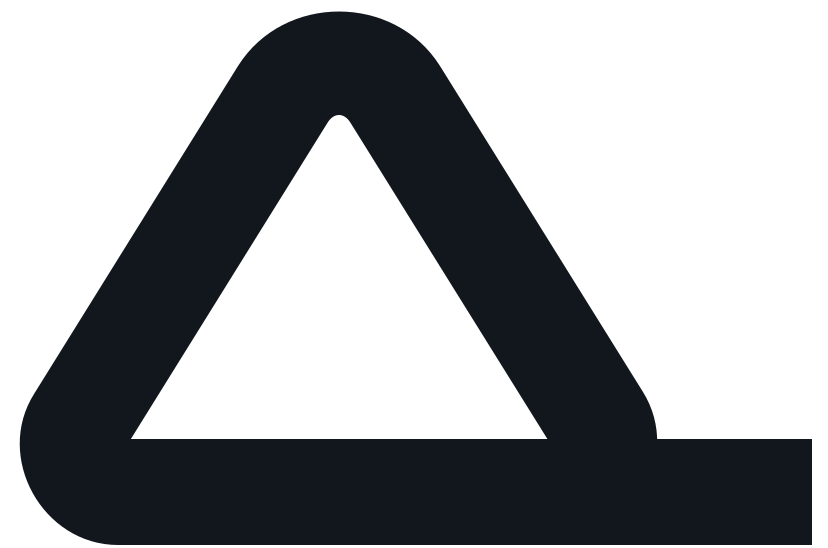

The situation
A bank, lender, fintech or capital provider must know what it is authorised to do, why and what happens after the decision.

AlphaIT EngineeringLisBon Trust Infrastructure (LTI)
LTI is deterministic infrastructure for governing financial trust, eligibility, authorisation, exposure and credit obligations. It preserves the evidence, rules, state and history behind each consequential decision.
Banks, lenders, fintechs and capital providers assessing individuals, businesses or institutions.
The system in action
A bank, lender, fintech or capital provider must know what it is authorised to do, why and what happens after the decision.
LTI applies governed evidence and approved policy to trust, eligibility, exposure and obligation states, with replayable decision history.
The institution sees the evidence, applicable rule, decision path, exposure and obligation lifecycle together.
Agree what success looks like
Decision consistency; time to decision; replayability; exposure visibility; obligation-state accuracy.
Measures are agreed for each deployment. They are not guaranteed results.From fit to deployment
We confirm the people, data, connections, authority and operating conditions required. Then we agree scope, delivery stages, acceptance checks and support.
Where the ready system does not fully fit, AlphaIT can engineer the missing connection or capability.
Credit providers retain their decisions and capital risk. Deployment is subject to applicable law, agreed policy and the authority of each participating institution.
Frequently asked
If your question is not here, ask it directly and we will answer it against what the system does today.
LTI is deterministic infrastructure for governing financial trust, eligibility, authorisation, exposure and credit obligations. It preserves the evidence, rules, state and history behind each consequential decision.
Banks, lenders, fintechs and capital providers assessing individuals, businesses or institutions.
A bank, lender, fintech or capital provider must know what it is authorised to do, why and what happens after the decision.
LTI applies governed evidence and approved policy to trust, eligibility, exposure and obligation states, with replayable decision history.
The institution sees the evidence, applicable rule, decision path, exposure and obligation lifecycle together.
Decision consistency; time to decision; replayability; exposure visibility; obligation-state accuracy.
Yes. AlphaIT licenses, deploys, configures and integrates the system for each organisation, and engineers the missing connection or capability where the ready system does not fully fit. Scope, integrations, data permissions, acceptance checks, support and commercial terms are agreed per deployment.
AlphaIT Engineering works with organisations in Kenya, Nigeria, the United Arab Emirates and the wider Middle East. Deployment is subject to applicable law, the data permissions available and the authority of each participating organisation.

Your next step
Show us the use case. We will demonstrate the relevant operating route and agree the strongest next step.
projects@alphaitengineering.com